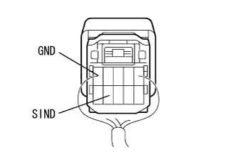

Air Conditioner Control Assembly On-vehicle Inspection |
| 1. Inspect Air Conditioning Control Assembly |
 |
Warning Light Operation Signal Inspection
Using SST (Toyota electrical tester) with the vehicle wire harness connector connected, measure the voltage between each terminal.
| Inspection Terminal (Terminal Symbol) | Condition | Standard |
|---|---|---|
| 9(SIND) - 5(GND) | IG ON, sitting in front passenger seat, front passenger inner seat belt tongue plate not inserted → inserted | 11 to 14 V ←→ below 1 V repeated → 11 to 14 V |